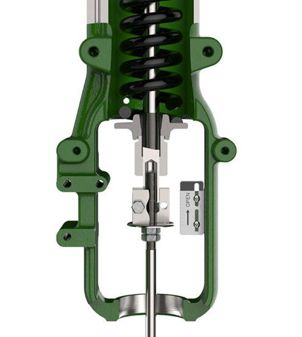

Release the spring before you loosen the stem connector
The 667's spring drives the plug/stem assembly down whenever the actuator is connected to a valve — the same force it fails down with on loss of air. Do not loosen the stem connector cap screws while spring or loading-pressure force is on it: parts move suddenly and can injure you.
